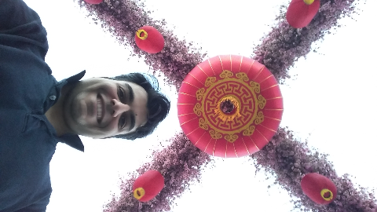

Chinese New Year, Feb. 2016, City of Angels.
Hamid (Seyed Hamidreza) Mohammadi
Senior Software Engineer, ML,
Google
Email:
s.hamidreza.mohammadi@gmail.com
Google Scholar.
Interested in Deep Learning applied to Speech and Language Processing.
Voice Conversion audio samples:
is15,
is18,
is19.
Education
- Ph.D. in Computer Science and Engineering, 2019,
Oregon Health & Science
University, Portland, OR.
- M.S. in Computer Science, 2011,
Sharif
University of Technology, Tehran, IRAN.
- B.S. in Computer Engineering, 2009,
Isfahan
University of Technology, Isfahan, IRAN.
Publications
Full list of publications
- S.H. Mohammadi, T. Kim, One-shot voice conversion with disentangled representations by leveraging phonetic posteriograms, Interspeech, 2019. [pdf, link, samples, poster]
- S.H. Mohammadi, Speech Representation Learning for Voice Conversion: A Dissertation, Oregon Health & Science University, 2019. [pdf, link]
- S.H. Mohammadi, T. Kim, Investigation of using disentangled and interpretable representations for one-shot cross-lingual voice conversion, Interspeech, 2018. [pdf, blog post, samples, poster]
- S.H. Mohammadi, A. Kain, Siamese Autoencoders for Speech Style Extraction and Switching Applied to Voice Identification and Conversion, Interspeech, 2017. [pdf, link]
- S.H. Mohammadi, A. Kain, An overview of voice conversion systems, Speech Communication, 2017. [pdf, link]
- S.H. Mohammadi, A. Kain, A Voice Conversion Mapping Function based on a Stacked Joint-Autoencoder, Interspeech, 2016. [pdf, link]
- S.H. Mohammadi, A. Kain, Semi-supervised Training of a Voice Conversion Mapping Function using Joint-Autoencoder, Interspeech, 2015. [pdf, poster]
- S.H. Mohammadi, A. Kain, Voice Conversion Using Deep Neural Networks With Speaker-Independent Pre-Training, SLT, 2014. [pdf, poster, link]
- S.H. Mohammadi, A. Kain, Transmutative Voice Conversion, ICASSP, 2013. [pdf, slides, link]
- S.H. Mohammadi, A. Kain, J. van Santen, Making Conversational Vowels More Clear, Interspeech, 2012. [pdf, link]
- S.H. Mohammadi, H. Sameti, et al, KNNDIST: A Nonparametric distance measure for speaker
segmentation, Interspeech, 2012. [pdf, link]
Talks and Presentations
Full list of talks
- Deep Neural Networks in Automatic Speech Recognition, Guest Co-Lecturer, Advanced Topics in Speech Processing Course at UCLA Spring 2019, 2019-04-11.
- Speech Representation Learning for Voice Conversion, Thesis Defense, 2019-02-15. [pdf]
- Deep Learning; A Hands-on Introduction, Guest Lecturer, Advanced Topics in Speech Processing Course at UCLA Spring 2018, 2018-04-23. [slides]
- Introduction to Deep Learning, Guest Lecturer, Advanced Topics in Speech Processing Course at UCLA Spring 2017, 2017-04-18.
- Capturing and Synthesizing Human Voice, Guest Lecturer, Speech Processing Course at UCLA Spring 2016, 2016-04-13.
- Recent advances in Speech Generation using Deep Learning Techniques, Guest Lecturer, Deep Learning Course at OHSU Fall 2015, 2015-09-28. [slides]
-
Deep Learning, Guest Lecturer, Machine Learning Course at OHSU Spring 2015, 2015-06-01. [slides]
Reviewer
- IEEE/ACM Transactions on Audio, Speech and Language Processing Journal (TASLP)
- Speech Communication (SPECOM)
- Computer Speech and Language (CSL)
- Journal of AI Research (JAIR)
- IEEE Transactions on Neural Networks and Learning Systems
- Neural Networks
- IEEE-TCDS, JASA-EL, Interspeech, ICASSP, APSIPA-TSIP, ICCT, AISP
Miscellaneous
-
How I speed up Ubuntu 16.04 LTS that is intalled on VirtualBox on MacOS. link
-
A simple ipython script showing Python multi-processing abilities. link.
- HTS-demo_CMU-ARCTIC-SLT-Formant: Synthesizing formant frequency and bandwith from text using HTS 2.2.
-
How I Install Google Play Store Apps on my Amazon Fire 5th gen. link
Last updated: 2022-04-11 (ISO 8601)